Información de PS3
Algunos de los aplicaciones o ayuda que mostramos a continuación son más que nada para ayudar con algunas necesidades que se presenten.
Nos puede recomendar algunos programas o aplicaciones para subir a nuestra WEB o si encuentra algún problema con algunos links o comandos le agradecemos informar para mantener esta página activa. igual todos los comandos y los link fueron actualizados el 10-04-2022.
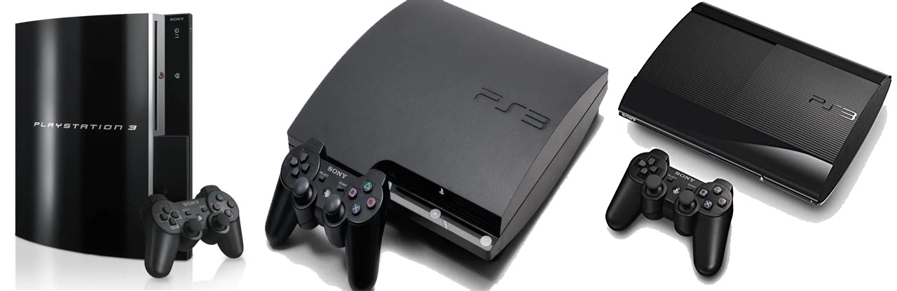Backup a nuestra consola PS3
Backup IDPS
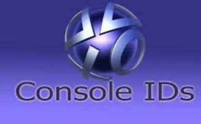Copias de seguridad del act y id de la consola en una memoria USB, estos archivos son únicos de muestra consola el id es el identificador de nuestra consola y act es la activación de nuestra consola. Los archivos en nuestra USB quedan con el nombre de act.dat y idps.hex estos archivos guardarlos en un lugar seguro.
- Pagina Web para Usar en la Consola
https://marchelo1989.github.io/PS3
Backup NOR
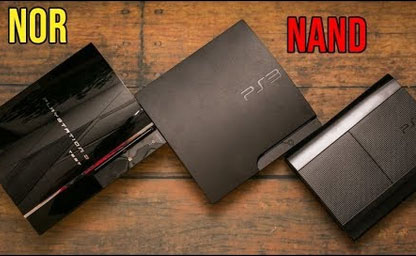Copia de la memoria flash de la consola. Los dos tipos principales de memoria flash, NOR flash y NAND flash. Los archivos en nuestra USB quedan con el nombre de yyyymmdd-hhmmss-FLASH-NOR-FW4.75.NORBIN (yyyymmdd-hhmmss es: AñoMesDia-HoraMinutosSegundos) estos archivos guardarlos en un lugar seguro.
- Pagina Web para Usar en la Consola
https://marchelo1989.github.io/PS3
Hombrew - Extenciones
Apollo Save Tool (PS3)
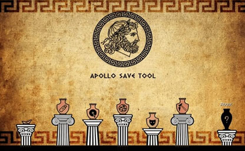Apollo Save Tool es una aplicación para administrar archivos de partidas guardadas, trofeos y licencias en PlayStation 3. La apollo-ps3aplicación homebrew permite descargar, desbloquear, parchear y cancelar archivos de juegos guardados directamente en tu PS3. También puede desbloquear y renunciar a trofeos, hacer copias de seguridad/restaurar licencias y crear imágenes de PS2 Classic.
Archivos Para descargar
| Archivos | Servidores | |||
|---|---|---|---|---|
| Apollo Save Tool (PS3) | Mega | Mediafire | Nube | WEB Oficial |
Audio por usb o Bluetooth
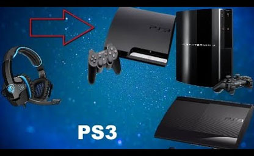Esto habilita que puedas emparejar / conectar dispositivos por Bluetooth y USB como audifonos y Micrófonos. Al habilitar esta funcione podra conectar los audifonos desde el USB de la consola como a su vez por el Bluetooth sin la necesidad de que sean compatibles con la consola.
Archivos Para descargar
| Archivos | Servidores | |||
|---|---|---|---|---|
| BTGA-303-CORO-48X | Mega | Mediafire | Nube | WEB Oficial |
IRISMAN
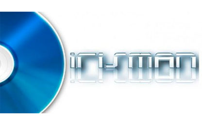es una bifurcación de Iris Manager del desarrollador Estwald con muchas características y de código abierto, el segundo administrador de copia de seguridad más utilizado después de multiMAN. Trae como innovación principal la introducción de soporte para exFAT en el administrador de archivos.
Archivos Para descargar
| Archivos | Servidores | |||
|---|---|---|---|---|
| IRISMAN | Mega | Mediafire | Nube | WEB Oficial |
ManaGunZ
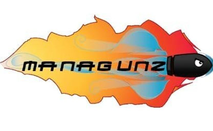Es una utilidad para lanzar nuestras ISOs y juegos CFW desde PS3. Incluye payloads de IRIS, Multiman y COBRA, para poder gestionar lo mejor de cada launcher reunido en uno mismo. ManaGunz en nuestro HEN nos permite cargar y gestionar PS3ISO, BDISO, PS2ISO y PSXISO. Es capaz de crear directamente ISO's en nuestra PS3 o de copiar los juegos a CFW. También son hermanos del potente FileManager, que permite todas las funciones que puedas necesitar de un explorador de PS3.
Archivos Para descargar
| Archivos | Servidores | |||
|---|---|---|---|---|
| ManaGunZ | Mega | Mediafire | Nube | WEB Oficial |
multiMAN
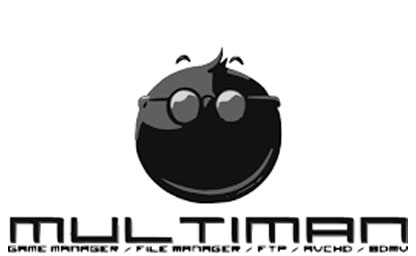Es una aplicación homebrew que funciona como gestor de archivos y cargador de backups (copia de seguridad de juegos de PS3). El gestor de archivos (o explorador de archivos) de MultiMAN nos permite mover, copiar y pegar archivos de distintos medios de almacenamiento en la consola PlayStation 3; ya sea disco interno de la PS3 (HDD) o memoria / dispositivo extraíble USB.
Archivos Para descargar
| Archivos | Servidores | |||
|---|---|---|---|---|
| multiMAN | Mega | Mediafire | Nube | WEB Oficial |
PSNPatch
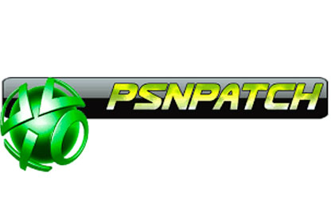Esta es una pequeña aplicación creada por KW e inspirada en los trabajos de stoker25 (psidpatch) y usuario (psnope). El objetivo principal es falsificar la identificación de la consola y deshabilitar las extensiones cfw syscalls para hacer que su sistema sea más "seguro" para ingresar a la PSN. (¡Tenga en cuenta que MÁS seguro no significa que ES seguro!). También elimina la ejecución del historial de arranque. Los complementos cobra opcionales se descargan de la memoria después de la activación.
Archivos Para descargar
| Archivos | Servidores | |||
|---|---|---|---|---|
| PSNPatch | Mega | Mediafire | Nube | WEB Oficial |
FileManager
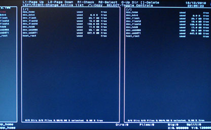Este gestor de ficheros nos da la posibilidad de navegar por todos los directorios de la PS3, así como de cualquier memoria externa que tengamos conectada. Podremos copiar y eliminar de la forma más simple imaginable.
Archivos Para descargar
| Archivos | Servidores | |||
|---|---|---|---|---|
| FileManager | Mega | Mediafire | Nube | WEB Oficial |
Artemis
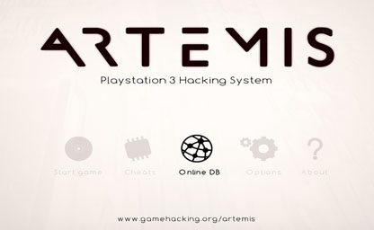El desarrollador Bucanero a publicado una nueva versión de Artemis, un sistema de trampas (Trucos) para videojuegos de Playstation 3 de código abierto creado bajo la iniciativa Project Artemis.
Archivos Para descargar
| Archivos | Servidores | |||
|---|---|---|---|---|
| Artemis | Mega | Mediafire | Nube | WEB Oficial |
Licencias
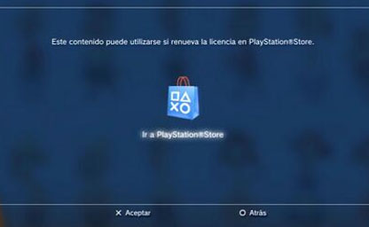para activar los juegos y contenido de PS3 PSN. Un calvario para más de uno que siguen teniendo problemas para instalarlas o ponerlas correctamente. Existe el típico pkg de las 15.280 licencias que las instalas y ya deberías de poder licenciar y activar casi todo el contenido sin que salga la bolsita típica de que hay que renovar (comprar) para poder jugarlo, pero siguen sin estar todas. Además, no recomiendo instalar todo eso, ya que es imposible que jueges a semejante cantidad de juegos o dlc´s y tendrás miles de archivitos en tu consola o que no usarás nunca. La mejor forma es hacerlo manualmente descargando solo el rap (licencia) del juego que se va a jugar.
Archivos Para descargar
| Archivos | Servidores | |||
|---|---|---|---|---|
| Licencias | Mega | Mediafire | Nube | WEB Oficial |
- Forma manual de instalación:
- Todo juego o dlc tiene un Title ID como por ejemplo: (BLES01032 Físico / NPEB01032 Digital). Simplemente necesitas buscar el rap con este ID BLES01032 si es en formato carpeta o NPEB01032 si es Digital de PSN y copiarlo en la carpeta
- Del USB:
exdata - En el disco de la consola:
dev_hdd0/exdata - Recuerda que si el title ID del rap (licencia) no concuerda con el title ID del juego no funcionará.
MOVIAN
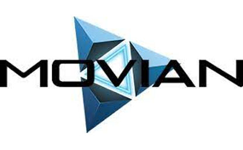Es una app de ps3 que se instala en CFW/HEN para ver peliculas, series, listas de reproducción y escuchar música, todo Online. Es tan útil que si combinas Movian con las apps de Spotify, Netflix y Crunchyroll te queda todo un centro multimedia completo. Excelente alternativa para quienes no tienen una smart tv. luego entras y configuras los plugins que quieras. Yo recomiendo usar el plugin de YTS para ver peliculas en streaming, y descargar el plugin de Opensubtitles para las traducciones pues todo está en inglés.
Archivos Para descargar
| Archivos | Servidores | |||
|---|---|---|---|---|
| MOVIAN | Mega | Mediafire | Nube | WEB Oficial |
Plex
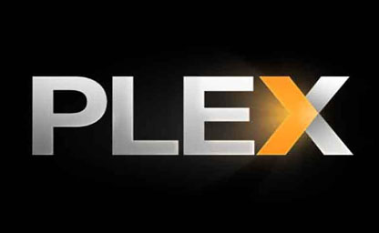Una aplicación con la que puedes convertir tu ordenador en un centro multimedia utilizando el contenido digital que tengas en él. Reconoce todos los archivos multimedia que tengas alojados en la carpeta de origen, y los organiza con diferentes secciones para que los tengas relativamente organizados independientemente de que los tengas ordenados o no dentro de la carpeta de tu ordenador.
Archivos Para descargar
| Archivos | Servidores | |||
|---|---|---|---|---|
| Plex | Mega | Mediafire | Nube | WEB Oficial |
PS3 Unlock HDD Space
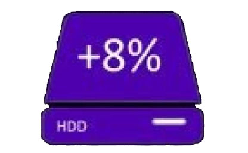Desbloquea hasta un 8% de espacio en el HDD. Es sorprendente, pero real, gracias a 3141card ahora puedes liberar espacio en el HDD con solo instalar un simple pkg. Todo esto es posible gracias al trabajo de ensteinx2.
Archivos Para descargar
| Archivos | Servidores | |||
|---|---|---|---|---|
| PS3 Unlock HDD Space | Mega | Mediafire | Nube | WEB Oficial |
webMAN MOD
es un manager plugin sprx compatible con CEX/DEX y HEN, es el mejor compañero para todos los Custom Firmware COBRA así como con HEN. Si quieres lanzar cómodamente tus juegos desde el XMB, gestionar tu PS3 desde el PC y tener la máxima compatibilidad con COBRA sigue el hilo.
Archivos Para descargar
| Archivos | Servidores | |||
|---|---|---|---|---|
| webMAN MOD APP | Mega | Mediafire | Nube | WEB Oficial |
| Caratulas | Mega | Mediafire | Nube | WEB Oficial |
Emuladores y Retro
PS2 para PS3
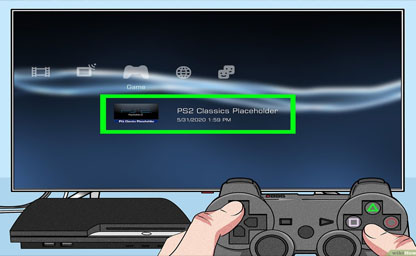Emuladores para poder ejecutar los juegos de PS2 en nuestra PS3. Nuestros juegos en formato ISO tienen que estar en la siguiente ubicación. Ahora se simplificó el proceso de encriptar de ISO a ISO.BIN.ENC directamente desde la PS3.
- En el disco de la consola seria:
- En el USB seria en la Raíz del USB:
dev_hdd0/PS2ISO
PS2ISO
Archivos Para descargar
| Archivos | Servidores | |||
|---|---|---|---|---|
| PS2 APP | Mega | Mediafire | Nube | WEB Oficial |
| exdata | Mega | Mediafire | Nube | WEB Oficial |
Retroarch
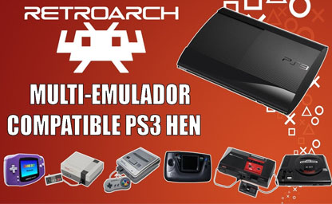RetroArch es una interfaz para emuladores, motores de juegos y reproductores multimedia. Le permite ejecutar juegos clásicos en una amplia gama de computadoras y consolas a través de su elegante interfaz gráfica. Los ajustes también están unificados, por lo que la configuración se realiza de una vez por todas. ¡RetroArch tiene funciones avanzadas como sombreadores, netplay, rebobinado, tiempos de respuesta del siguiente cuadro, runahead, traducción automática, funciones de accesibilidad ciega y más!
Archivos Para descargar
| Archivos | Servidores | |||
|---|---|---|---|---|
| Retroarch | Mega | Mediafire | Nube | WEB Oficial |
PSP para PS3
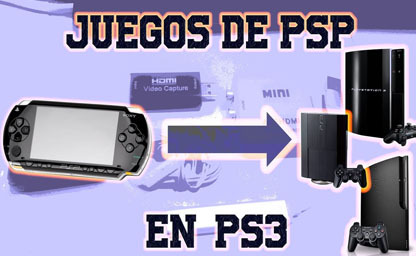Emuladores para poder ejecutar los juegos de PSP en nuestra PS3. Si está utilizando un juego compatible con ambos sistemas, puede copiar los datos guardados del juego de un sistema al otro para poder seguir jugando en el punto en el que lo dejó. El método de copia de los datos guardados varía en función del tipo de juego.
Archivos Para descargar
| Archivos | Servidores | |||
|---|---|---|---|---|
| PSP | Mega | Mediafire | Nube | WEB Oficial |
Tiendas
PKGI
Es un port para Playstation 3. Esta aplicación nos permite descargar e instalar archivos .pkg directamente en nuestra Playstation 3. Lista fácilmente descargas, incluídas búsquedas, filtros y ordenar por tipo. Lista fácilmente descargas, incluídas búsquedas, filtros y ordenar por tipo. Lista fácilmente descargas, incluídas búsquedas, filtros y ordenar por tipo.
Archivos Para descargar
| Archivos | Servidores | |||
|---|---|---|---|---|
| PKGI | Mega | Mediafire | Nube | WEB Oficial |
WIKISTORE
Versión modificada del HAN Toolbox Original (complemento no oficial para PS3Xploit) Esto es una Fr33shop / Store donde podrás descargar juegos de PSX, PS2, PSP, PS3 P$N y Exclusivos directamente desde tu consola PS3. Tendrás acceso a descargas de Hombrew, emuladores retro y un montón de modificaciones para tu consola. Además podrás hacer uso de todos los exploits desde el menu XMB sin la necesidad de acceder al navegador de internet de la consola o usar un pc (local host).
Archivos Para descargar
| Archivos | Servidores | |||
|---|---|---|---|---|
| WIKISTORE | Mega | Mediafire | Nube | WEB Oficial |
VIDEOSTORE
Store gratuita para PlayStation 3 con juegos PSX, PS2, PS3, PSP y DLC. También programas Homebrew, utilidades y personalización para PS3. Compatible con cualquier consola PS3 ya sea FAT, SLIM o SUPER SLIM con HEN. Para CFW se requiere de un fix exclusivo.
Archivos Para descargar
| Archivos | Servidores | |||
|---|---|---|---|---|
| VIDEOSTORE | Mega | Mediafire | Nube | WEB Oficial |
Extras
PACK AVATARES PS3
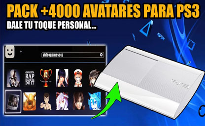Avatares instalables en pkg son 4330 archivos para escoger y instalar. El pack bien comprimido en rar para descargarlos lo único que hay que hacer es descomprimirlo y escoger cuales quiere instalar en su consola y pasarlos a una memoria USB para instalarlos en la consola de PS3